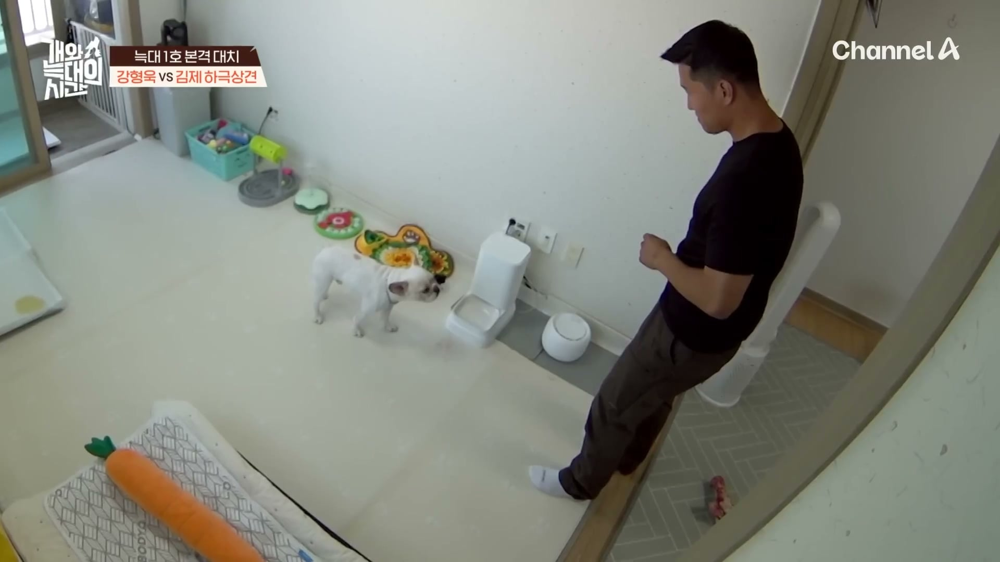

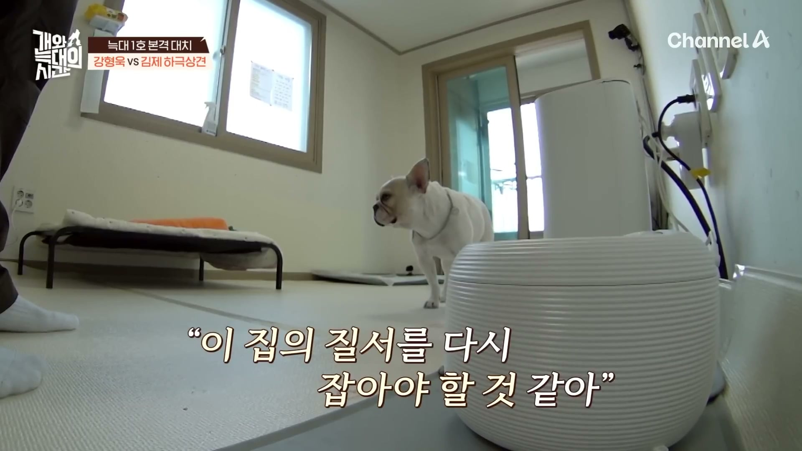


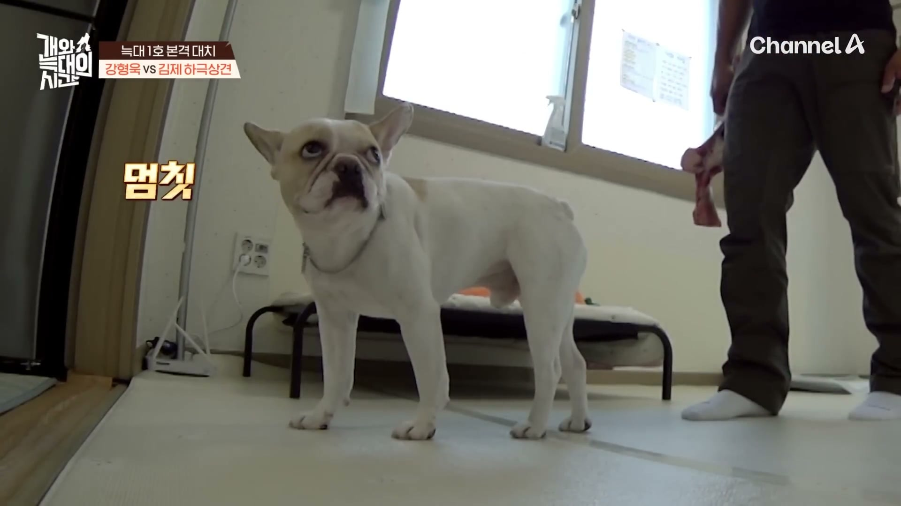


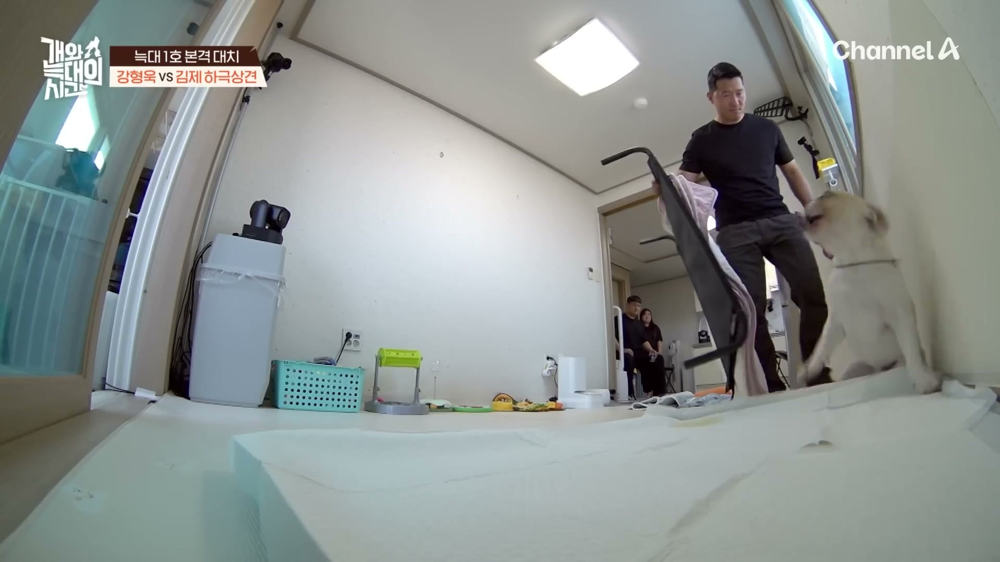
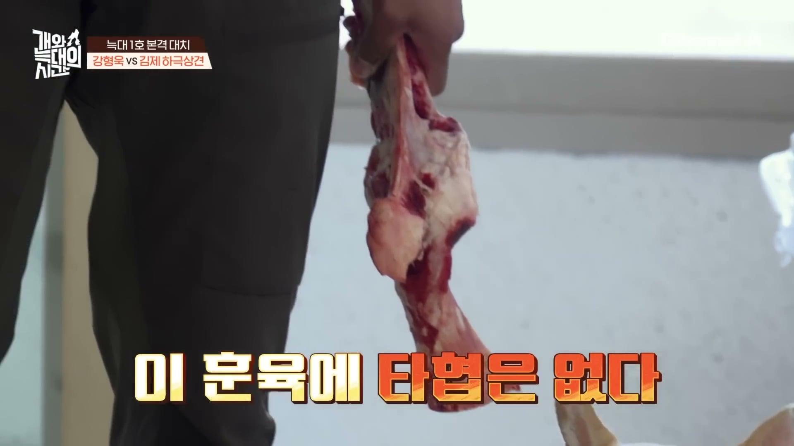
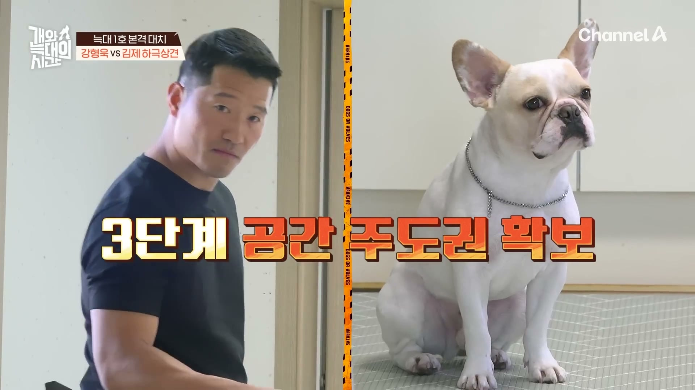

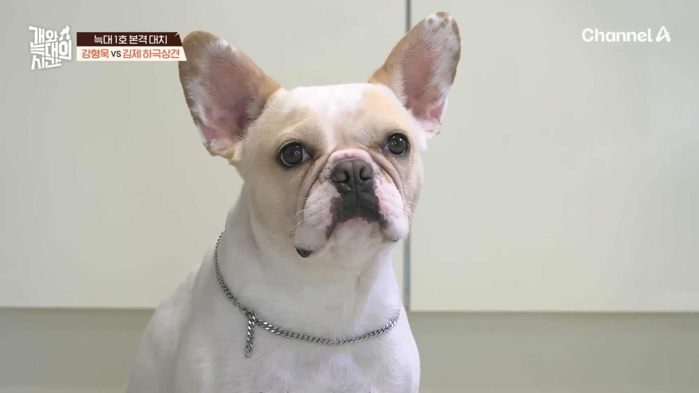
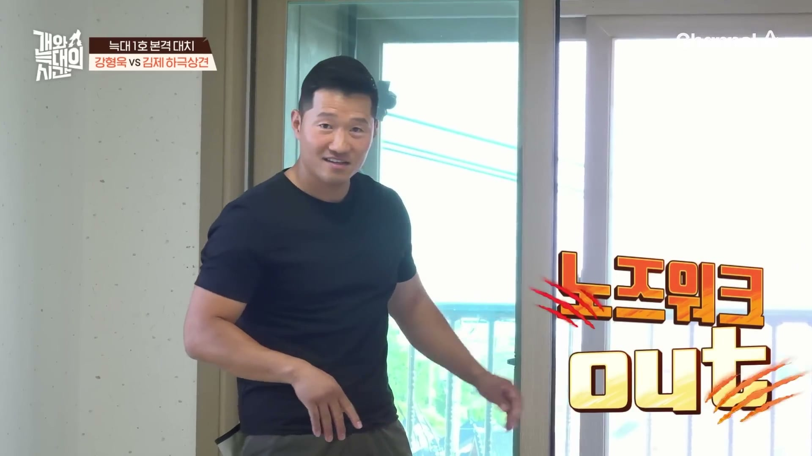


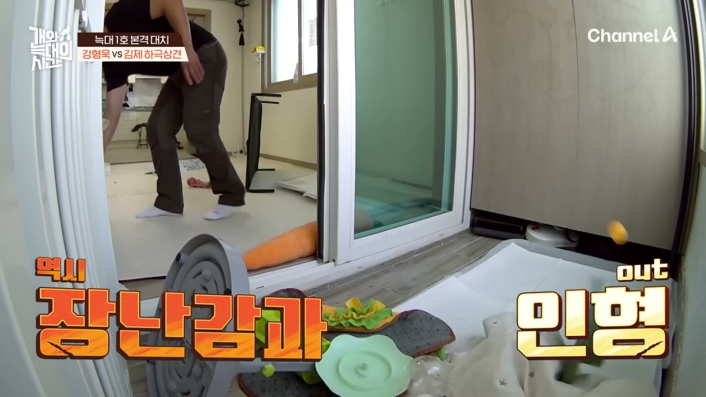
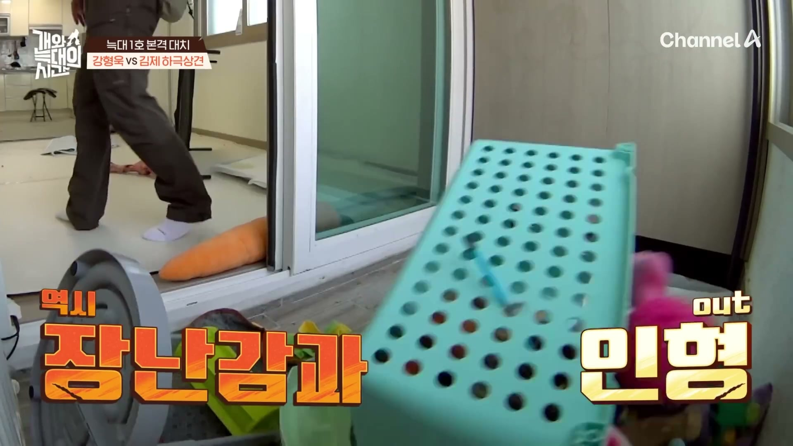

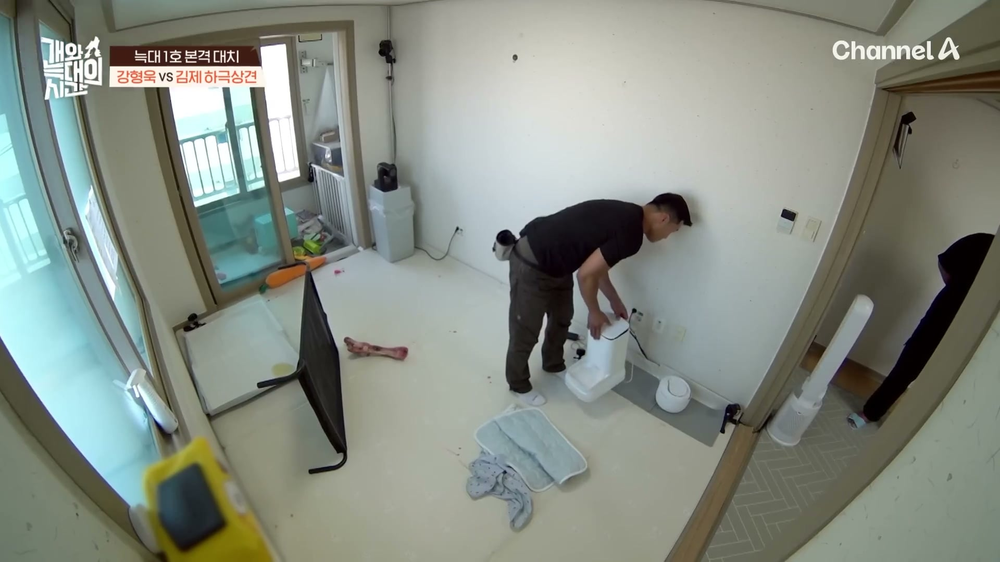


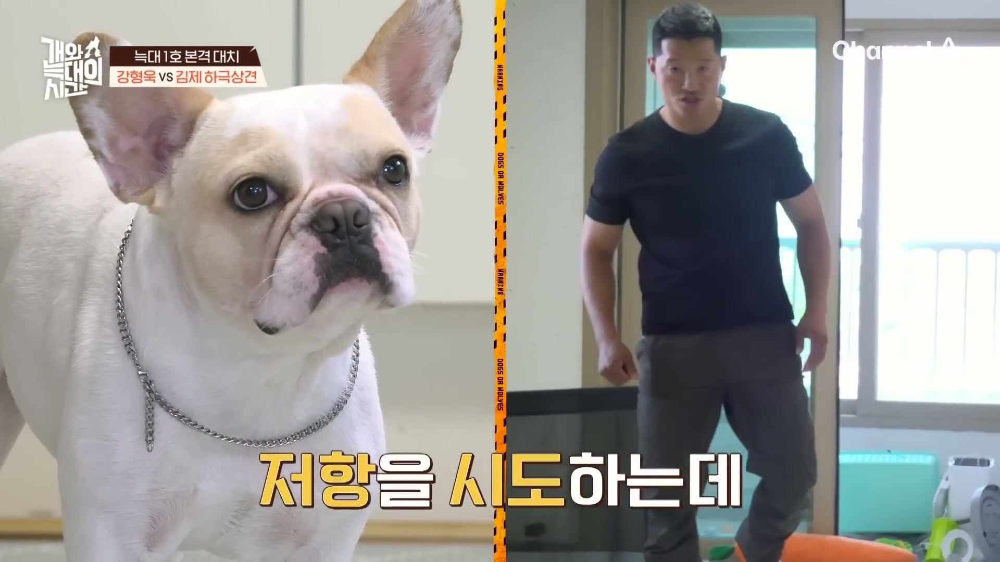














개는 본능이 강한자를 따르기에 강하게 대처하면 집안에서 절대 개때문에 일이 일어날수가 없음
맞음 무조건 서열이라 오냐오냐 해주면 머리꼭대기 위에 있지 ㅋㅋ 근데 그걸 모르면 서열이 1위로 개가 있는순간 개한테 계속 당할수 밖에 없는거지 ㅋㅋ 오냐오냐가 꼭 좋은게 아닌데 잘 모르는사람이 많더라 ㅋㅋ
개를 사람인지 아는 머저리때문에 문제가 시작되는거지
한손에 고기는 뭔데 ㄷㄷ
이게 뭐였을거같아? 인가


개고기인가
ㅋㅋㅋㅋㅋㅋㅋㅋㅋㅋㅋㅋㅋㅋㅋㅋㅋㅋ 왤ㅇ케웃기냐 이거 진짜 ㅋㅋㅋㅋㅋㅋㅋㅋㅋㅋ
내가 내가졌소 이제 그만해주시오